Tvorba
webových stránek
na míru
Moderní a funkční weby
Vytvářím moderní a funkční weby pro malé firmy a OSVČ, které přivádějí nové zákazníky.
To chci.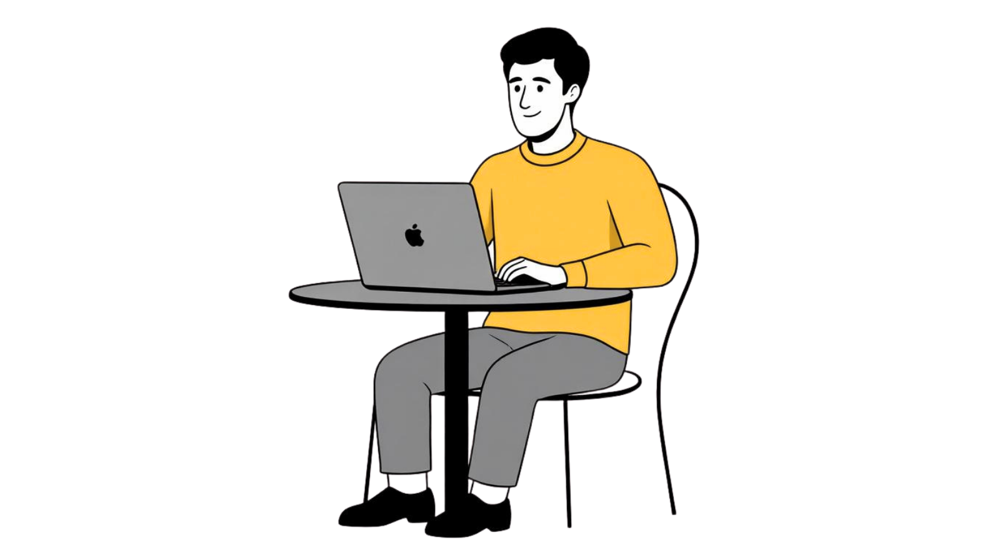
Společně vytvoříme webové stránky, které budou
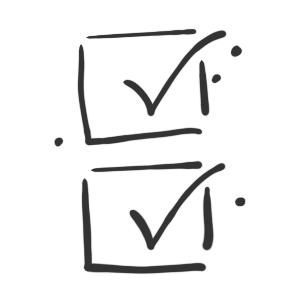
Jednoduché a přehledné
Čistý a nerušivý vzhled.
Jasná struktura a snadná orientace.
Dobrá čitelnost a příjemné barvy.
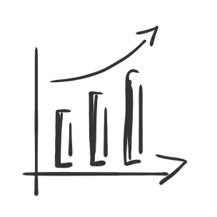
Funkční a rychlé
Rychlé načítání a zabezpečení.
Optimalizace pro vyhledávače.
Plná funkčnost na mobilech i počítačích.
Co nabízím
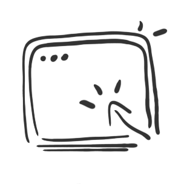
1/ Tvorba webových stránek
Vytvoříme webové stránky, které budou magnetem pro vyhledávače, s obsahem, který zaujme a prezentací, která vás vystihne.
To chci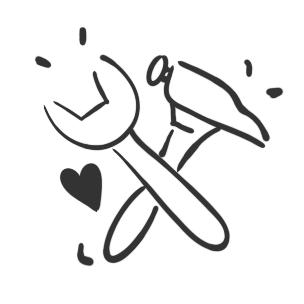
2/ Editace a péče o webové stránky
Udržím váše webové stránky v top formě – bleskově rychlé, neprůstřelně bezpečné a vždy snadno k nalezení.
To se hodí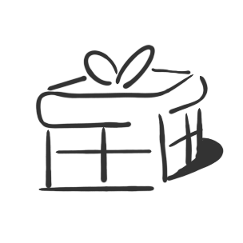
3/ Něco navíc
Můžu vám připravit texty na web, pomoci s výběrem nebo pořízením fotografií a vytvořit jednoduché logo,
Zajímá mě toChcete, aby lidé ve vašem okolí věděli, co umíte a jak jim můžete pomoci?
Rád si s vámi nezávazně zavolám na 30 minut a probereme vaše představy.
Konzultace zdarma1/ Tvorba webových stránek na míru
Vyberte si cestu, která vám dává největší smysl.
Hledáte
jednoduchost bez starostí, nebo chcete mít svůj web plně pod kontrolou?
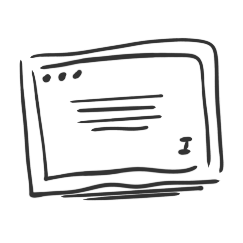
Webová vizitka
(bez administrace)
Ideální volba, pokud hledáte moderní online vizitku. Vše důležité na jedné stránce, reprezentativní design a provoz bez nutnosti vašich zásahů.
Zahrnuje:
- Moderní a vzdušný design
- Přehledná struktura obsahu
- Plná responzivita (mobily/tablety)
- Základní SEO nastavení
- Blesková rychlost a bezpečnost
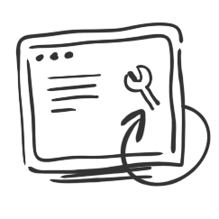
Web s administrací
(redakční systém)
Živý web, který roste s vámi. Díky přehledné administraci si můžete sami měnit texty, přidávat projekty nebo psát aktuality bez čekání na webaře.
Zahrnuje:
- Snadná správa obsahu (administrace)
- Možnost budoucího rozšiřování
- Blog, projekty nebo fotogalerie
- Pokročilé nástroje pro SEO
- Plně pod vaší kontrolou
Aby stránky pracovaly tak jak mají
2/ Editace a péče o webové stránky
Aby váš web fungoval tak, jak má, potřebuje občasnou péči. Aktualizace, zálohy i technické
věci klidně nechte na mně.
O web se starám pravidelně 3x do roka.
Rád vám pomůžu
i s texty, fotkami nebo přidáním nových funkcí.
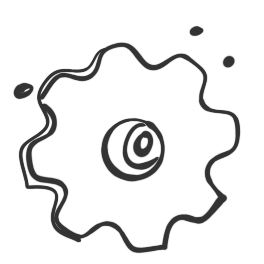
1x údržba
- pravidelná záloha webu
- aktualizace pluginů
- kontrola stavu webu
- správa 3x do roka
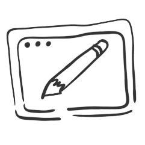
Editace
- úprava vzhledu webu
- aktualizace textů
- rozšíření možností webu
- jiné úpravy
Co cena zahrnuje a nezahrnuje:
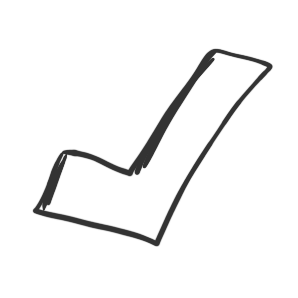
Co zahrnuje
Úvodní schůzka
Doména a hosting
Návrh webové struktury
Zabezpečení
Mobilní přizpůsobení
Základní SEO
Cookie lišta
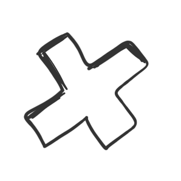
Co nezahrnuje
Cena za doménu a hosting
Tvorba finálních textů
Fotografie
Průběžná údržba webu
Úpravy po spuštění webu
Zaškolení do DIVI
Napojení na Google Analytics
Kdo za tím stojí?
webař Honza
Jsem vystudovaný dřevař a nábytkář, ale život mě nakonec zavedl do sociálních služeb, kde pracuji dodnes.
K webům jsem se dostal nenápadně — vždycky mě to táhlo ke grafice, designu a focení, a z toho byl jen krůček k tvorbě webových stránek. Velký impuls mi dal i kurz Magdalény Bouškové (webykvalitne.cz), který mi pomohl dát mému koníčku jasnější směr. Webařina je pro mě prostor, kde můžu spojit kreativitu, estetiku i technickou stránku věcí.
A když je třeba vypnout, sáhnu po dobré kávě nebo vyrazím ven — příroda je pro mě největší inspirací.
Spolupráce při tvorbě webových stránek
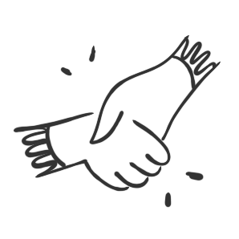
Jak vzniká váš web
Stanovíme cíl
Nejprve si řekneme, co má web splňovat, pro koho je určený a jaký výsledek od něj očekáváte. Díky tomu bude mít celý projekt jasný směr.
Připravím koncept a strukturu
Navrhnu logické uspořádání stránek a obsah tak, aby byl web přehledný a návštěvníci se na něm snadno orientovali.
Navrhnu a vytvořím web
Zpracujeme vizuální podobu a pustím se do samotné realizace. Důraz kladu na jednoduchý design, rychlost načítání a pohodlné používání.
Otestuji a spustím online
Vše doladím, zkontroluji funkčnost a připravím web ke spuštění, aby byl připravený bez problémů fungovat od prvního dne.
Chcete jednoduchý a funkční web, který bude fungovat?
Napište mi. Rád se na váš projekt podívám.
Pokud chcete, abych rychleji dostal představu
o vašem projektu, můžete vyplnit dotazník.
Jan Klika
Kontaktujte měPO-PÁ / 8:00-17:00
IČ: 08479500
Nejsem plátcem DPH.
Zapsán u živnostenského úřadu České Budějovice.